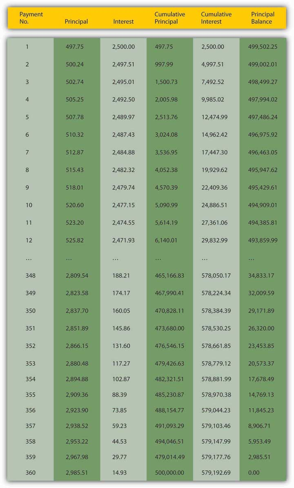
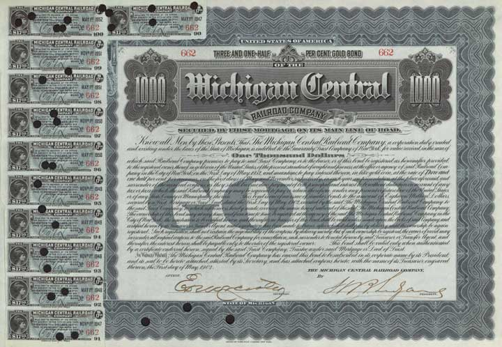

Believe it or not, you are now equipped to calculate the price of any debt instrumentA bond, IOU, or other contract (like a discount bond, simple loan, fixed payment loan, or coupon bond) promising the payment of money in the future. or contract provided you know the rate of interest, compounding period, and the size and timing of the payments. Four major types of instruments that you are likely to encounter include discount bonds, simple loans, fixed-payment loans, and coupon bonds.
A discount bondA debt instrument that makes only one payment, its face value on its maturity or redemption date. Also known as a zero coupon bond. (aka a zero coupon bondSee discount bond. or simply a zeroSee discount bond.) makes only one payment, its face value on its maturity or redemption date, so its price is easily calculated using the present value formula. If the interest rate is 6 percent, the price of a discount bond with a $1,000 face value due in exactly a year would be $943.40 (1000/1.06). If the interest rate is 12 percent, the same discount bond’s price would be only $892.86 (1000/1.12). If the bond is due in two years at 12 percent, its price would be $797.19 (1000/(1.122), and so forth.
A simple loanA debt instrument where the borrower repays the principal and interest at the end of the loan. is the name for a loan where the borrower repays the principal and interest at the end of the loan. Use the future value formula to calculate the sum due upon maturity. For example, a simple loan of $1,000 for one year at 3.5 percent would require the borrower to repay $1,035.00 (1000× 1.035), while a simple loan at the same rate for two years would require a payment of $1,071.23 (1000 × 1.0352). (Note that the correct answer is not just $35 doubled due to the effects of compounding or capitalizing the interest due at the end of the first year.)
A fixed-payment loanA debt instrument in which the borrower makes periodic repayments of principal and interest. (aka a fully amortized loan) is one in which the borrower periodically (for example, weekly, bimonthly, monthly, quarterly, annually, etc.) repays a portion of the principal along with the interest. With such loans, which include most auto loans and home mortgages, all payments are equal. There is no big balloon or principal payment at the end because the principal shrinks, slowly at first but more rapidly as the final payment grows nearer, as in Figure 4.2 "Sample thirty-year amortizing mortgage".
Principal borrowed: $500,000.00; Annual number of payments: 12; Total number of payments: 360; Annual interest rate: 6.00%; Regular monthly payment amount: $2,997.75
Figure 4.2 Sample thirty-year amortizing mortgage
Today, such schedules are most easily created using specialized financial software, including Web sites like http://ray.met.fsu.edu/cgi-bin/amortize, http://www.yona.com/loan/, or http://realestate.yahoo.com/calculators/amortization.html. If you wanted to buy this mortgage (in other words, if you wanted to purchase the right to receive the monthly repayments of $2,997.75) from the original lender (there are still secondary markets for mortgages, though they are less active than they were before the financial crisis that began in 2007), you’d simply sum the present value of each of the remaining monthly payments. (Again, a computer is highly recommended here!)
Finally, a coupon bondA debt instrument that makes interest payments periodically until its maturity or redemption date, when the final interest payment and the principal are to be paid. is so-called because, in the past, owners of the bond received interest payments by clipping one of the coupons and remitting it to the borrower (or its paying agent, usually a bank). Figure 4.3 "Sample bond coupon, Malden & Melrose Railroad Co., 1860", for example, is a coupon paid (note the cancellation holes and stamp) to satisfy six months’ interest on bond number 21 of the Malden & Melrose Railroad Company of Boston, Massachusetts, sometime on or after April 1, 1863. Figure 4.4 "Michigan Central Railroad, 3.5 percent bearer gold bond with coupons attached, 1902" is a $1,000 par value coupon bond issued in 1902, with some of the coupons still attached (on the left side of the figure).
Figure 4.3 Sample bond coupon, Malden & Melrose Railroad Co., 1860
Courtesy of CelebrateBoston.com
Figure 4.4 Michigan Central Railroad, 3.5 percent bearer gold bond with coupons attached, 1902
Museum of American Finance
Even if it no longer uses a physical coupon like those illustrated in Figure 4.3 "Sample bond coupon, Malden & Melrose Railroad Co., 1860" and Figure 4.4 "Michigan Central Railroad, 3.5 percent bearer gold bond with coupons attached, 1902", a coupon bond makes one or more interest payments periodically (for example, monthly, quarterly, semiannually, annually, etc.) until its maturity or redemption date, when the final interest payment and all of the principal are paid. The sum of the present values of each future payment will give you the price. So we can calculate the price today of a $10,000 face or par value coupon bond that pays 5 percent interest annually until its face value is redeemed (its principal is repaid) in exactly five years if the market rate of interest is 6 percent, 4 percent, or any other percent for that matter, simply by summing the present value of each payment:
PV1 = $500/(1.06) = $471.70 (This is the interest payment after the first year. The $500 is the couponThe interest rate promised to the owner of a coupon bond. or interest payment, which is calculated by multiplying the bond’s face value, in this case, $10,000, by the bond’s contractual rate of interest or “coupon rate,” in this case, 5 percent. $10,000 × .05 = $500.)
That adds up to $9,578.77. If you are wondering why the bond is worth less than its face value, the key is the difference between the contractual interest or coupon rate it pays, 5 percent, and the market rate of interest, 6 percent. Because the bond pays at a rate lower than the going market, people are not willing to pay as much for it, so its price sinks below par. By the same reasoning, people should be willing to pay more than the face value for this bond if interest rates sink below its coupon rate of 5 percent. Indeed, when the market rate of interest is 4 percent, its price is $10,445.18 (give or take a few pennies, depending on rounding):
If the market interest rate is exactly equal to the coupon rate, the bond will sell at its par value, in this case, $10,000.00. Check it out:
Calculating the price of a bond that makes quarterly payments over thirty years can become quite tedious because, by the method shown above, that would entail calculating the PV of 120 (30 years times 4 payments a year) payments. Until not too long ago, people used special bond tables to help them make the calculations more quickly. Today, to speed things up and depending on their needs, most people use financial calculators, specialized financial software, and canned spreadsheet functions like Excel’s PRICEDISC or PRICEMAT, custom spreadsheet formulas, or Web-based calculators like http://www.calculatorweb.com/calculators/bondcalc.shtml or http://www.investinginbonds.com/calcs/tipscalculator/TipsCalcForm.aspx.
It’s time once again to get a little practice. Don’t worry; these are easy enough to work out on your own.
Assume no default risks or transaction costs.